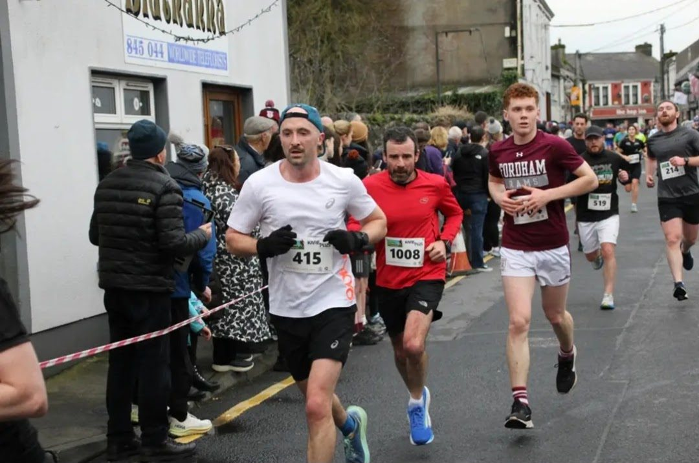
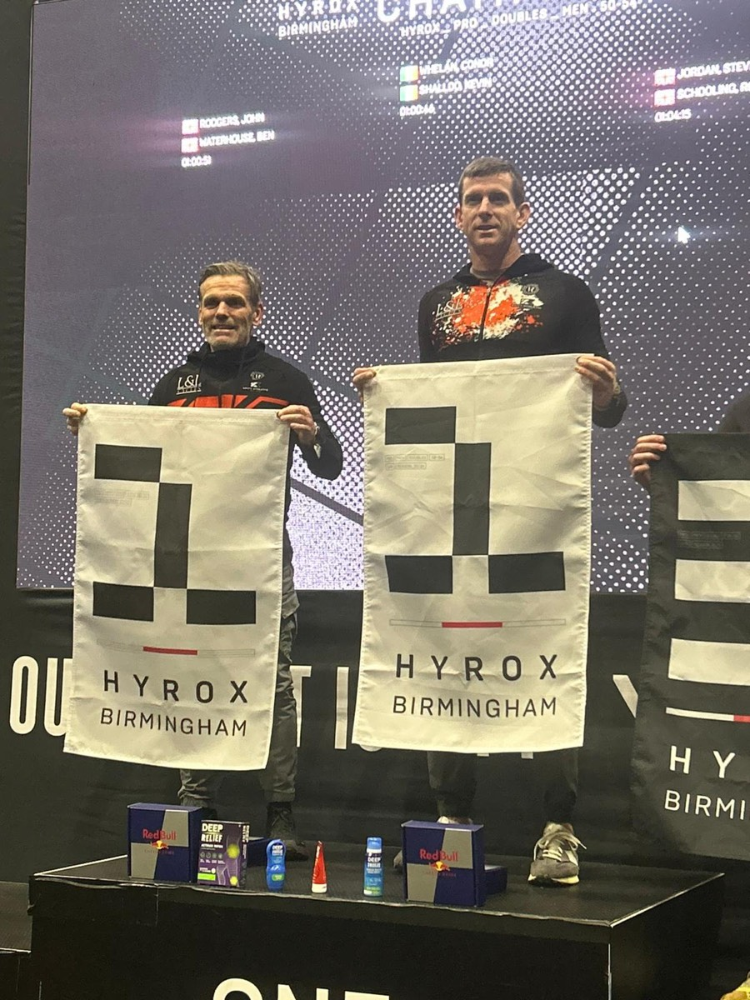
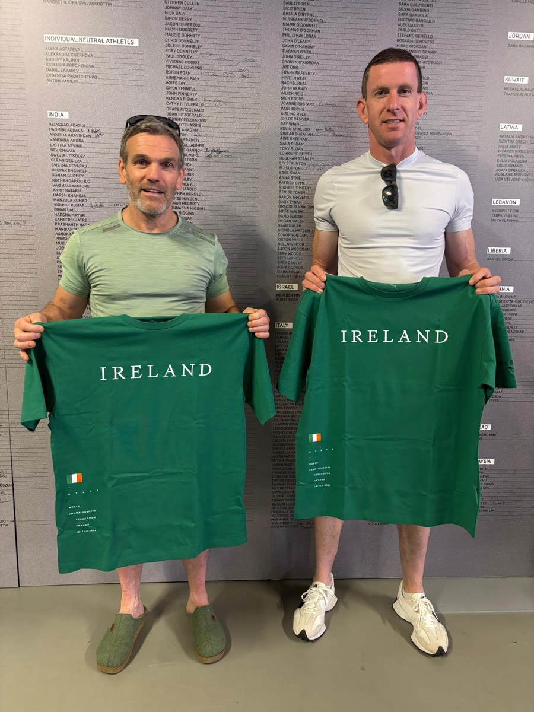
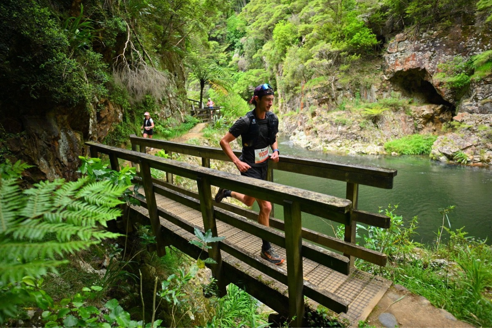
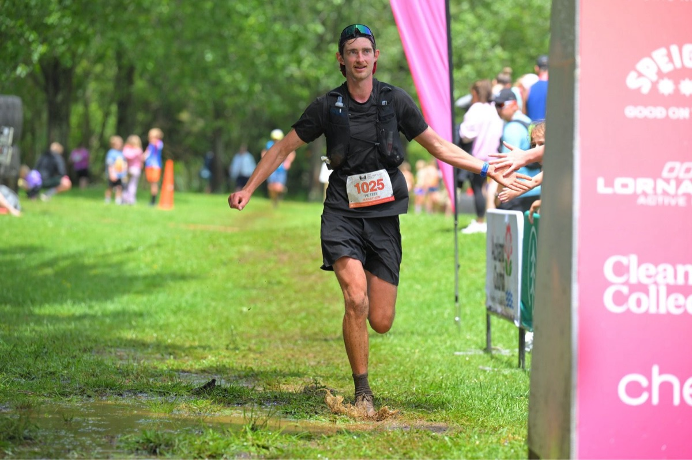
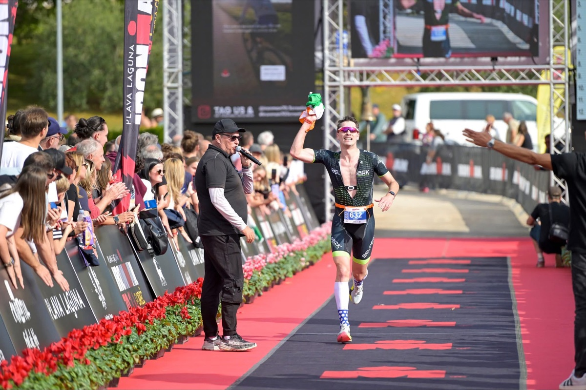
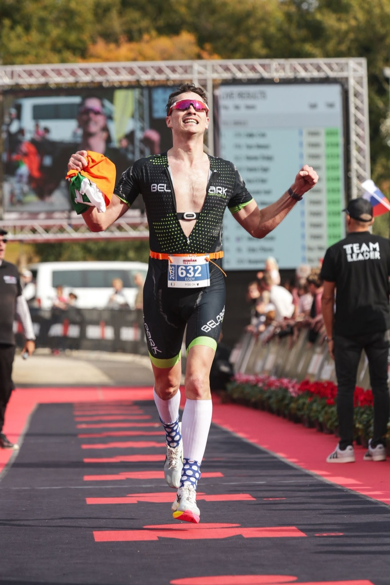

Athletes & competitors
Quiet the mind, manage the pressure, and perform when it matters most.
Mental Performance & Mindset Coach
One-to-one coaching for high performers and athletes who want to master the mental side of their sport or business. Grounded in psychotherapy, not pep talks.
BA (Hons) Social Care · Grad Dip Psychotherapy (AUT, NZ) · MSc Pluralistic Counselling & Psychotherapy (IICP)
Most plateaus aren't physical. They're the doubt, the overthinking and the noise that shows up the moment it matters most. That's the part we train.
Quiet the mind, manage the pressure, and perform when it matters most.
Your business grows to the level of your leadership. Think like the leader your future requires.
Break self-doubt and step into decisive action. Build the inner advantage.
Owen is a qualified psychotherapist and counsellor as well as a mindset coach. The work doesn't stop at motivation — it gets to what's actually driving how you show up.
Notice the thoughts, patterns and reactions driving your behaviour.
Discover why they exist and how they're shaping your decisions.
Respond intentionally instead of reacting automatically.
You leave making decisions from a place of strength, not fear.

“A genius for seeing what's hidden beneath the surface — and helping you untangle it with compassion and clarity.”
Paul · Coach · London
Owen Costello is a mental performance and mindset coach with a Master's in Pluralistic Counselling and Psychotherapy from the Irish Institute of Counselling and Psychotherapy. He works with athletes, founders and ambitious professionals on the mental side of performance — confidence, pressure, focus, and the beliefs sitting underneath them.
His approach is to help you discover your own solutions, through techniques grounded in psychotherapy and counselling rather than motivation for its own sake. The aim isn't a temporary lift or relief. It's lasting change in how you think, perform and handle the difficult moments.
Every session is one-to-one and fully online. Owen has worked with clients across eight countries — fitted around seasons, schedules and time zones.
“Owen was picking up on small things I was saying, or not saying, and getting me to look at things in a different way. I raced at the Hyrox World Championships and used the mindset tools he gave me to prepare. It stood massively to me on race day. When the negative thoughts came, I was more than prepared, and I got myself back into a positive state of mind.”


“I had tried to go under 3 hours in the marathon on multiple occasions and realised I had hit a mental wall. Owen helped me explore the connection between my mental wellbeing and endurance performance. Since then I have done sub 3 hours, pushed myself to 120km in a backyard ultramarathon and run a 70km trail event in Patagonia with 4,000m of elevation gain. I could not have done this alone.”


“As a competitive triathlete I'd struggled with self-doubt, race-day nerves and pressure. Owen helped me build a stronger mindset and a healthier relationship with competition — approaching races with confidence and clarity rather than anxiety and overthinking. During our time working together I've reached some of the highest performances of my career, including qualifying for the Half Ironman World Championships, where I'll have the honour of representing Ireland.”


“I trained for and ran a marathon — not just the physical challenge, but proving to myself I'd built the mental strength to keep going when things get tough. Around the same time I got the biggest promotion of my career. Real proof I'm showing up differently now, with more confidence and clarity.”
“I expected I'd have to force daily practices into an already busy life. I was wrong. Twice a month I get to reflect, debrief and hold space for myself. My emotional intelligence has levelled up.”
“Where I am now is almost unrecognisable. I make decisions from a place of strength rather than fear. The shift has been genuinely life-changing.”
“I was stuck, low and full of regret. Now I have a clearer mindset — slowing things down, staying present, managing my own patterns in a practical way. It's made a real difference to my confidence.”
“Owen helped me get my mindset right while starting a new business — a balanced, educated approach to decisions and motivation. I couldn't recommend him highly enough.”
“A safe space to open up without judgement, and realistic tools for anxiety and stress in everyday life. A significant improvement in my wellbeing.”
“One of the best investments I've ever made in myself.”
Book a free intro call. No pressure and no pitch — just a conversation about where you're stuck and whether this is the right fit.
Book a free intro callPrefer email? owen@owencostellomindset.com